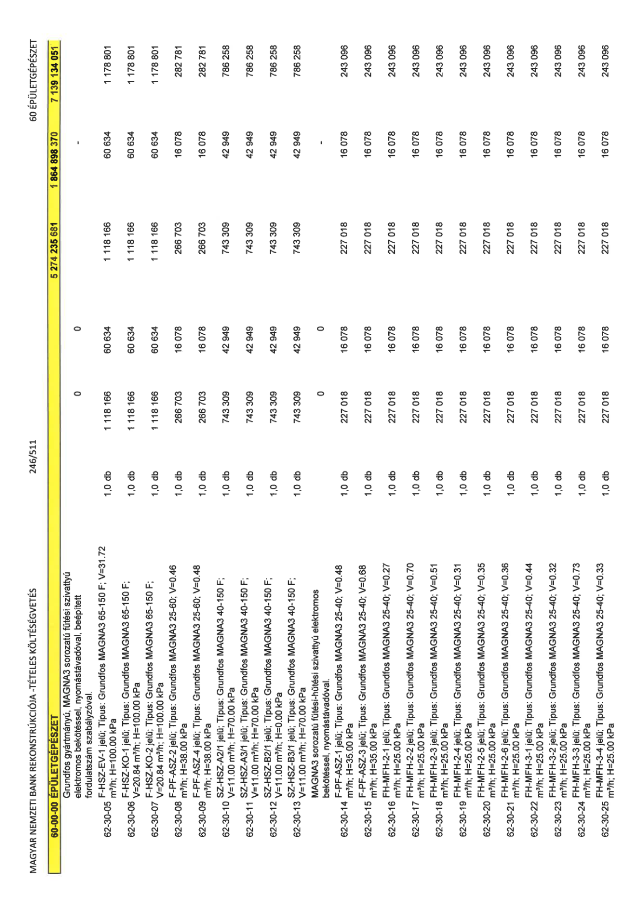

| Tétel | Menny. | Egys. | Anyag e.ár (net HUF) | Díj e.ár (net HUF) | Anyag összesen (net HUF) | Díj összesen (net HUF) | Anyag+Díj összesen (net HUF) |
|---|---|---|---|---|---|---|---|
| Grundfos gyártmányú, MAGNA3 sorozatú fűtési szivattyú elektromos bekötéssel, nyomástávadóval, beépített fordulatszám szabályzóval. | 0 | 0 | 0 | 0 | 0 | 0 | 0 |
| 62-30-05 F-HSZ-EV-1 jelű; Típus: Grundfos MAGNA3 65-150 F; V=31.72 m3/h; H=100.00 kPa | 1,0 | db | 1 118 166 | 60 634 | 1 118 166 | 60 634 | 1 178 801 |
| 62-30-06 F-HSZ-KO-1 jelű; Típus: Grundfos MAGNA3 65-150 F; V=20.84 m3/h; H=100.00 kPa | 1,0 | db | 1 118 166 | 60 634 | 1 118 166 | 60 634 | 1 178 801 |
| 62-30-07 F-HSZ-KO-2 jelű; Típus: Grundfos MAGNA3 65-150 F; V=20.84 m3/h; H=100.00 kPa | 1,0 | db | 1 118 166 | 60 634 | 1 118 166 | 60 634 | 1 178 801 |
| 62-30-08 F-PF-ASZ-2 jelű; Típus: Grundfos MAGNA3 25-60; V=0.46 m3/h; H=38.00 kPa | 1,0 | db | 266 703 | 16 078 | 266 703 | 16 078 | 282 781 |
| 62-30-09 F-PF-ASZ-4 jelű; Típus: Grundfos MAGNA3 25-60; V=0.48 m3/h; H=38.00 kPa | 1,0 | db | 266 703 | 16 078 | 266 703 | 16 078 | 282 781 |
| 62-30-10 SZ-HSZ-A2/1 jelű; Típus: Grundfos MAGNA3 40-150 F; V=11.00 m3/h; H=70.00 kPa | 1,0 | db | 743 309 | 42 949 | 743 309 | 42 949 | 786 258 |
| 62-30-11 SZ-HSZ-A3/1 jelű; Típus: Grundfos MAGNA3 40-150 F; V=11.00 m3/h; H=70.00 kPa | 1,0 | db | 743 309 | 42 949 | 743 309 | 42 949 | 786 258 |
| 62-30-12 SZ-HSZ-B2/1 jelű; Típus: Grundfos MAGNA3 40-150 F; V=11.00 m3/h; H=0.00 kPa | 1,0 | db | 743 309 | 42 949 | 743 309 | 42 949 | 786 258 |
| 62-30-13 SZ-HSZ-B3/1 jelű; Típus: Grundfos MAGNA3 40-150 F; V=11.00 m3/h; H=70.00 kPa | 1,0 | db | 743 309 | 42 949 | 743 309 | 42 949 | 786 258 |
| MAGNA3 sorozatú fűtési-hűtési szivattyú elektromos bekötéssel, nyomástávadóval. | 0 | 0 | 0 | 0 | 0 | 0 | 0 |
| 62-30-14 F-PF-ASZ-1 jelű; Típus: Grundfos MAGNA3 25-40; V=0.48 m3/h; H=35.00 kPa | 1,0 | db | 227 018 | 16 078 | 227 018 | 16 078 | 243 096 |
| 62-30-15 F-PF-ASZ-3 jelű; Típus: Grundfos MAGNA3 25-40; V=0.68 m3/h; H=25.00 kPa | 1,0 | db | 227 018 | 16 078 | 227 018 | 16 078 | 243 096 |
| 62-30-16 FH-MFH-2-1 jelű; Típus: Grundfos MAGNA3 25-40; V=0.27 m3/h; H=25.00 kPa | 1,0 | db | 227 018 | 16 078 | 227 018 | 16 078 | 243 096 |
| 62-30-17 FH-MFH-2-2 jelű; Típus: Grundfos MAGNA3 25-40; V=0.70 m3/h; H=25.00 kPa | 1,0 | db | 227 018 | 16 078 | 227 018 | 16 078 | 243 096 |
| 62-30-18 FH-MFH-2-3 jelű; Típus: Grundfos MAGNA3 25-40; V=0.51 m3/h; H=25.00 kPa | 1,0 | db | 227 018 | 16 078 | 227 018 | 16 078 | 243 096 |
| 62-30-19 FH-MFH-2-4 jelű; Típus: Grundfos MAGNA3 25-40; V=0.31 m3/h; H=25.00 kPa | 1,0 | db | 227 018 | 16 078 | 227 018 | 16 078 | 243 096 |
| 62-30-20 FH-MFH-2-5 jelű; Típus: Grundfos MAGNA3 25-40; V=0.35 m3/h; H=25.00 kPa | 1,0 | db | 227 018 | 16 078 | 227 018 | 16 078 | 243 096 |
| 62-30-21 FH-MFH-2-6 jelű; Típus: Grundfos MAGNA3 25-40; V=0.36 m3/h; H=25.00 kPa | 1,0 | db | 227 018 | 16 078 | 227 018 | 16 078 | 243 096 |
| 62-30-22 FH-MFH-3-1 jelű; Típus: Grundfos MAGNA3 25-40; V=0.44 m3/h; H=25.00 kPa | 1,0 | db | 227 018 | 16 078 | 227 018 | 16 078 | 243 096 |
| 62-30-23 FH-MFH-3-2 jelű; Típus: Grundfos MAGNA3 25-40; V=0.32 m3/h; H=25.00 kPa | 1,0 | db | 227 018 | 16 078 | 227 018 | 16 078 | 243 096 |
| 62-30-24 FH-MFH-3-3 jelű; Típus: Grundfos MAGNA3 25-40; V=0.73 m3/h; H=25.00 kPa | 1,0 | db | 227 018 | 16 078 | 227 018 | 16 078 | 243 096 |
| 62-30-25 FH-MFH-3-4 jelű; Típus: Grundfos MAGNA3 25-40; V=0.33 m3/h; H=25.00 kPa | 1,0 | db | 227 018 | 16 078 | 227 018 | 16 078 | 243 096 |
